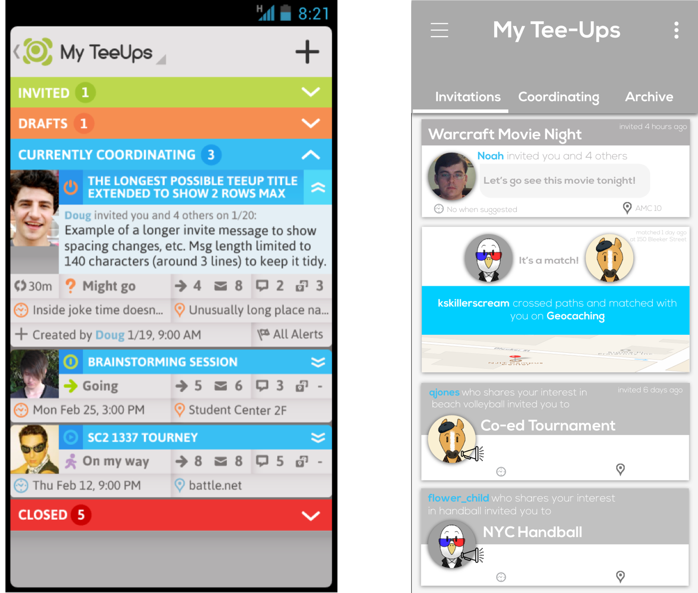
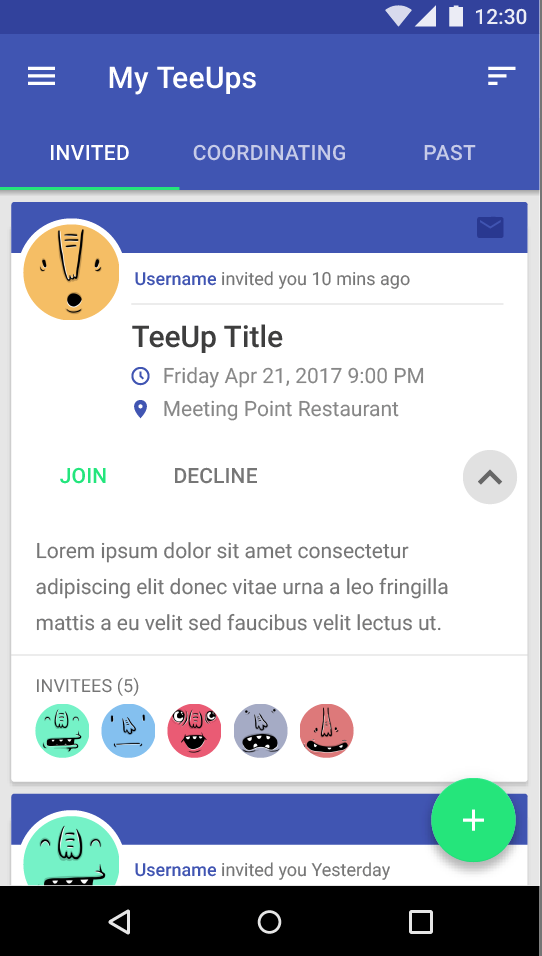

group coordination
Imagine planning a Friday night out to the movies with your friends. Things can get pretty complicated...which movie are we going to see? How are we getting there? Are we meeting at someone’s place first? Should we get dinner afterwards? Maybe ice cream?
These are some of the questions groups face when trying to coordinate plans. Most groups use group chat, text message, or email to plan the details for a night out. However, these systems do not support group coordination plans because coordination details get lost in the conversation and this leads to frustration and confusion. This was the basis for Dr. Richard Schuler’s doctoral dissertation. I was a part of his team from Fall 2015 to Summer 2016 to help with participant recruitment, user testing, and redesigning the UX of his group coordination app.
This work was supported by the National Science Foundation under grants 1261961 and 1041476.
My Roles : UX Participant Recruiter and Designer
The Problems:
- How could we find, recruit and schedule 100 strangers (25 groups of 4) to participate in our user study?
An earlier study proved that our group coordination app could coordinate groups of friends more easily than text message or email. But could the app work with four strangers who have never coordinated anything before?
- How could we set up a system that tracked which participants successfully participated in the study, and how they got paid?
Because of the large amount of participants for this study, a new system needed to be developed to accomodate all of the participants and our grant funds.
- The app, designed in 2013, needed updating. How could we use user research to update a few screens using new mobile design guidelines and protocols?
In 2013, Google’s Material Design and iOS design guidelines were not at the caliber they are today. Our group coordination app needed to follow these now standard protocols.
The Solutions:
Because this was a group coordination app, it needed to be tested in a group setting. The app needed all participants to be strangers, to test if the goals of the app and user were met. This meant that I needed to find, recruit, and schedule 25 groups with 4 participants each to test the app.
To achieve this, I created recruitment fliers and hung them all around the busiest places at NJIT: the campus center, the parking deck, and the dorms. I also reached out to the secretary of the Informatics Department and she was able to send out an email about the study to all of the students in the College of Computing Sciences.
I used Google Forms to accomplish two very important things. 1) By signing up for the study, participants had to also agree to our consent form. 2) They were able to select the times they were available throughout the week. Below is a link to my Google Drive which contains all my participant recruitment documents. All participant names have been changed.
Within a week of recruitment, I had received over 300 entries in Google Forms. Next, I had to start scheduling participants in 2-hour blocks for our study. I emailed four students that listed down the same availability and confirmed the times periodically throughout the week and day of. However, I quickly found that a lot of students cancelled the day of, usually only an hour before, and some students just did not bother to show. And since the study was all about groups, without four participants, we had to cancel the study for that time and send three participants home. No studies ran my first week because of cancellations. Very frustrating!
Checkout my participant recruitment documents here
I decided to email a fifth person the next week so that if one person cancelled I would have a back up. I also mentioned in my email to notify me two hours before cancelling and that by cancelling they would be putting the study in jeopardy. By informing the participants more about the study and the seriousness of the situation, they cancelled less and I had back up participants if they did.
I tracked all participants in Google Sheets that successfully showed up and participated in the study. Because this was such a large amount of participants, I had to meet with NJIT’s bursar office to allow participants to pick up their money from the bursar since I was not allowed to give out cash. All participants signed payout sheets after the completion of the study, and could go to the bursar at any time to pick up their money. I emailed the bursar at the end of every week with all the participants for the week and the total money distributed. The study ended in December 2015 with all 25 groups successfully completing the study.
The following summer I worked on various screens that needed to be updated.
From the prior user testing, we found that the old Inbox screens were too cluttered with information and very confusing. The first interaction change we made was to get rid of the drop downs and replace them with top navigation tabs. This created a seamless transition between the different inbox states.
Next we decided to use card components to display all the information needed on an invite. This allowed for less clutter and the information is now presented in a more straightforward way.

Old and low-fidelity mock-up Inbox Screens
A graphic designer on our team then created high fidelity mock-ups using Adobe Illustrator.
